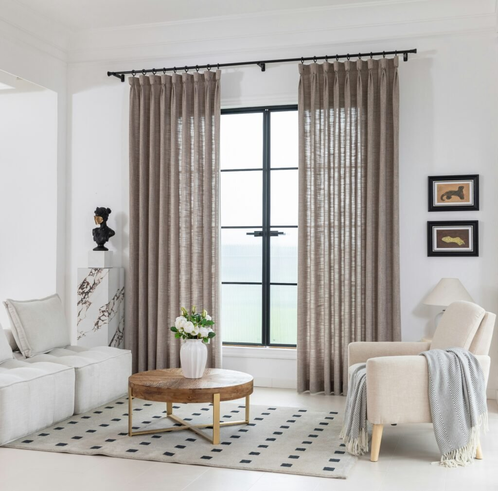
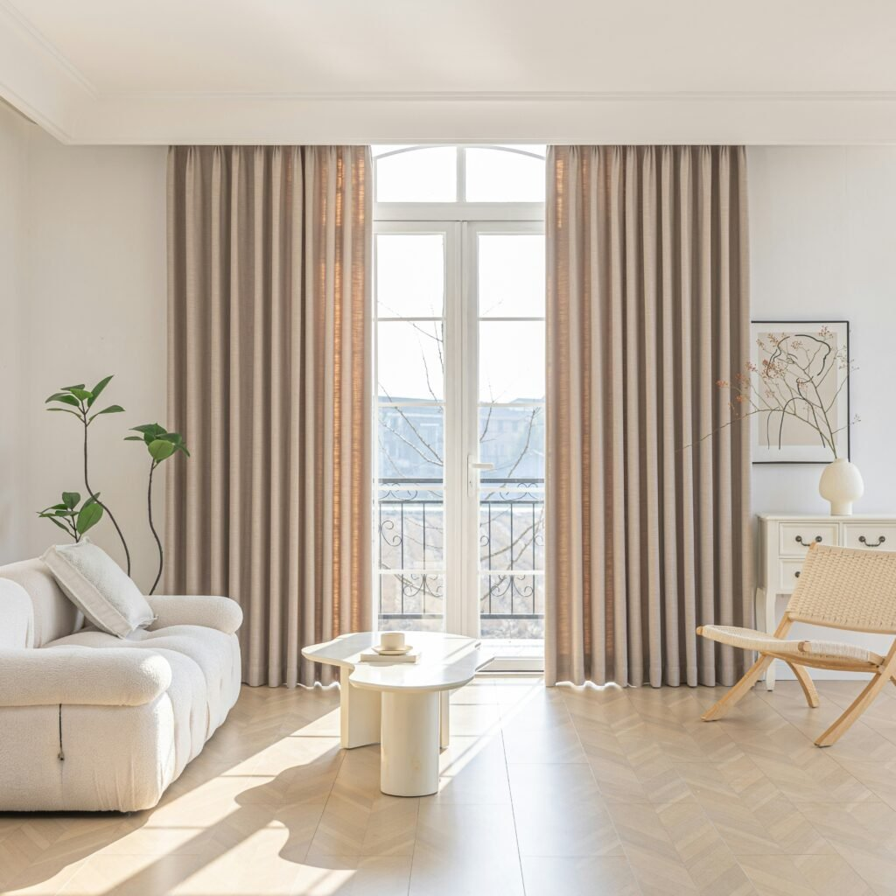
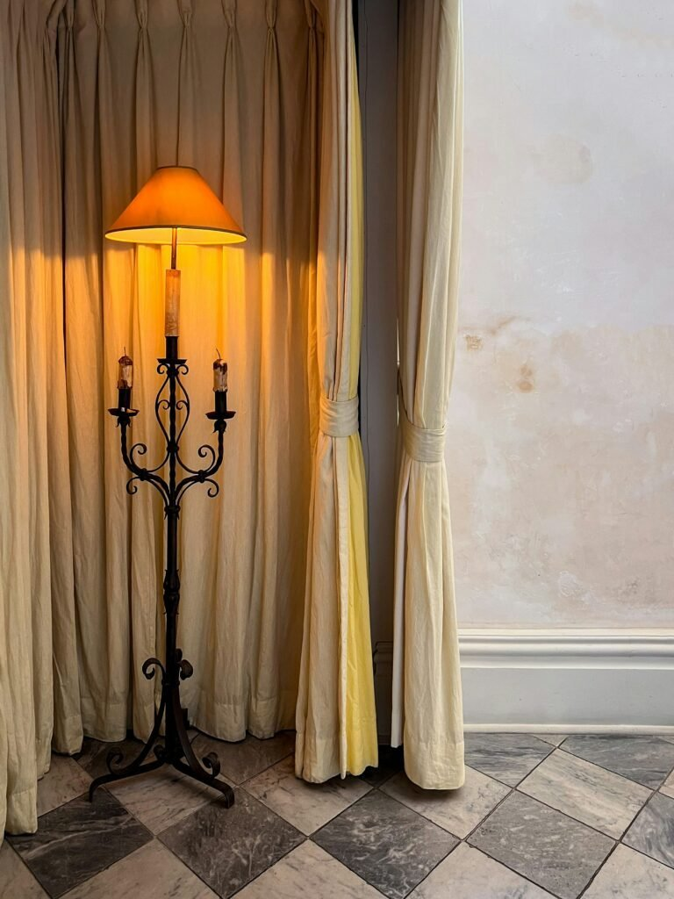
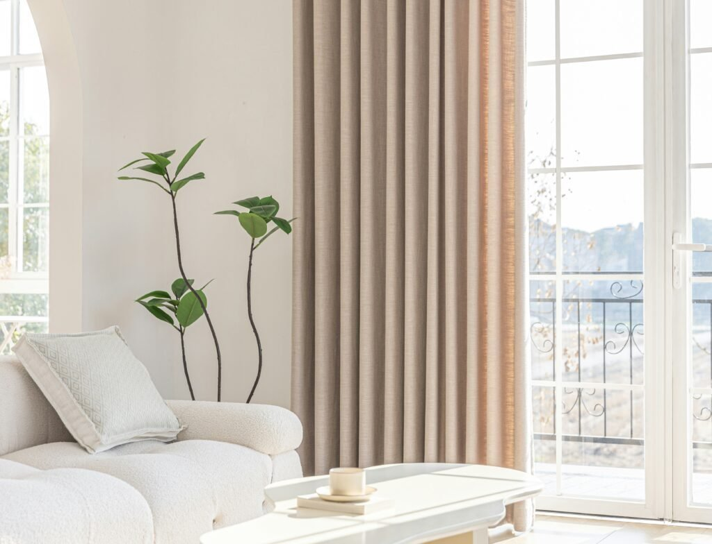
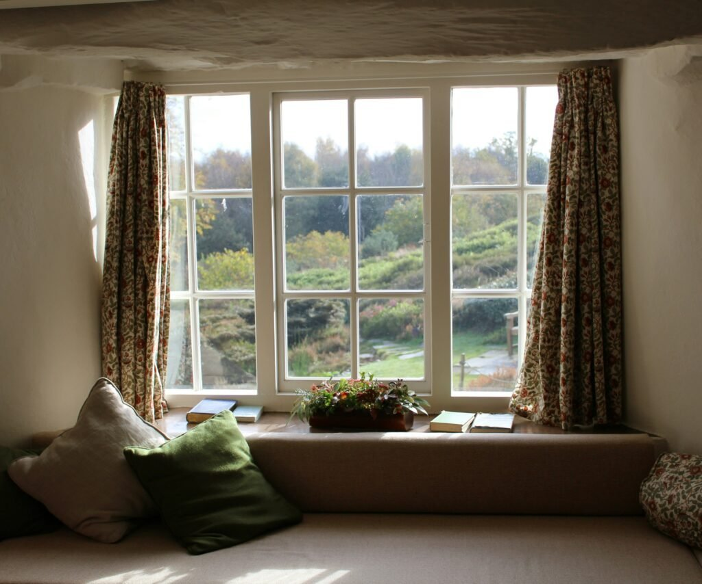

Let us be honest.
Curtains usually get picked last.
After the sofa.
After the rug.
After the paint color is already on the wall.
That is a mistake.
The right curtains can do more for a living room than almost anything else you buy.
They soften hard window trim.
They finish a room.
They make everything else look intentional.
So let us walk through how to actually choose them, step by step.

Why Curtains Pull More Weight Than You would Think
Windows are usually the biggest visual block in a living room.
Whatever frames them shapes the whole feel of the space.
Curtains are not just decoration, either.
They control light.
They add privacy.
They even help with insulation.
That is a lot of job for one purchase.

Start With the Fabric, Not the Color
Most people pick color first.
Try flipping that.
Fabric weight changes everything about how curtains feel and function.
Velvet and heavier linen blends block more light.
They also add real warmth to a room.
Sheer or lightweight cotton does the opposite — more light, airier feel.
Weight even affects how the fabric hangs and moves.
That matters more to the overall vibe than color ever will.

Layer Two Fabrics for the Best of Both Worlds
Here is a trick a lot of people skip.
Hang a sheer panel underneath a heavier curtain.
Now you control privacy and light separately, instead of picking just one.
It also adds depth.
A single flat panel cannot give you that same layered look.

Then Play With Color and Pattern
Matching the curtain color to your wall color makes a room feel bigger and more seamless.
Going with a contrasting color makes more of a statement instead.
Both are valid.
It depends on what you want the room to do.
Pattern works best when it is not fighting with anything else in the room.
A patterned curtain in an already busy room just reads as cluttered.
Save the pattern for a calmer backdrop.

Figure Out the Room's Vibe Before You Shop
A formal living room wants a different curtain than a relaxed, casual one.
Think crisp pleats versus loose, flowing panels.
Decide on the room's overall feel before you start browsing.
It narrows your options fast.
And it saves you from an impulse buy that does not actually fit.
Measure Like You Mean It
Curtains hung too short or too narrow are one of the most common mistakes out there.
Also one of the most noticeable.
The fix is simple: mount the rod higher and wider than the window frame itself.
Do not mount it right at the edges.
Both the window and the room end up looking bigger because of it.
Do not Skip the Hardware
The rod and finials are part of the design.
Not an afterthought.
They are visible.
People notice them, even if they cannot say why.
Match the rod finish to your other metal tones in the room.
Light fixtures, cabinet hardware, whatever else is already there.
It ties the whole look together more than you would expect.
Set a Real Budget, Not a Brand-Name One
Spend on fabric quality and construction.
Not on a designer label.
A few well-made panels beat a pile of cheap ones that fade or hang stiff.
Quality shows up fast with curtains.
Cutting corners shows up even faster.

Think About Upkeep Before You Fall in Love
A machine-washable fabric saves you real time down the road.
One that needs dry cleaning or careful ironing does not.
Factor this in before you commit to a fabric that looks perfect but turns out high-maintenance.
Where to Start
You do not need to nail every step on the first try.
Start with fabric weight.
It shapes everything else that follows.
Then work through layering, color, measuring, and hardware from there.
Curtains are one of the highest-impact, most overlooked upgrades a living room can get.
Give them the attention they deserve.